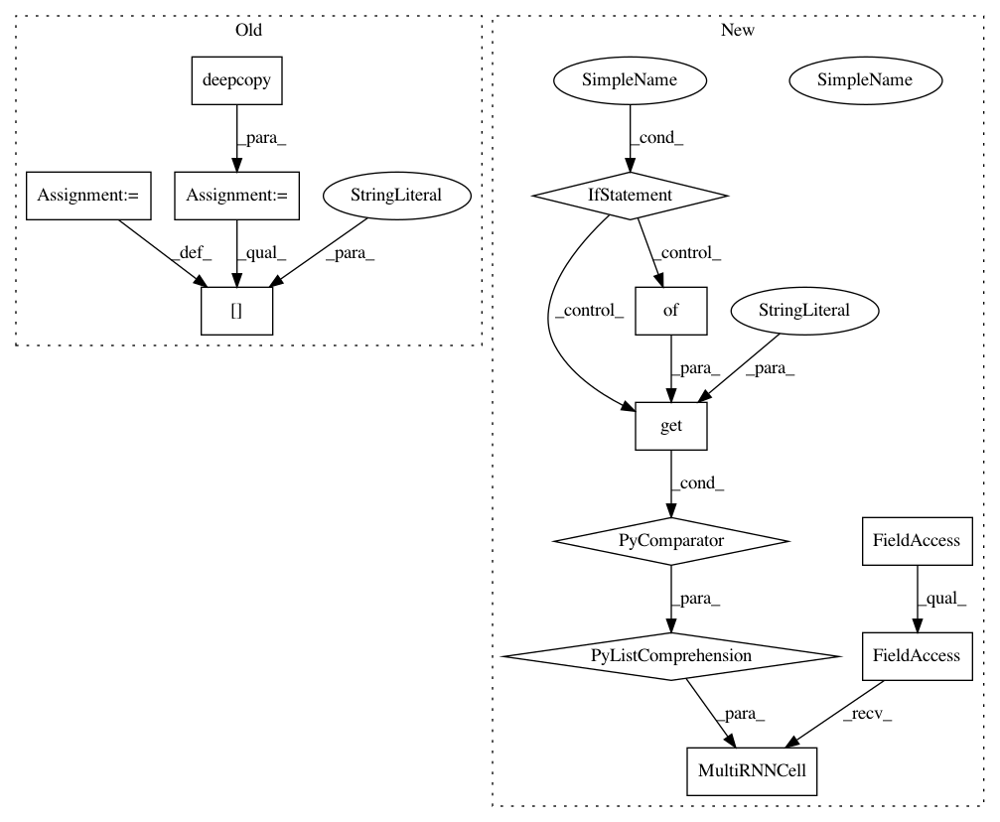

4ce9a9d078d41af1a960f0e5bf16e373f69d5117,open_seq2seq/decoders/rnn_decoders.py,BeamSearchRNNDecoderWithAttention,_decode,#BeamSearchRNNDecoderWithAttention#Any#,345
Before Change
self._tgt_vocab_size, use_bias=False,
)
cell_params = copy.deepcopy(self.params)
cell_params["num_units"] = self.params["decoder_cell_units"]
if self._mode == "train":
dp_input_keep_prob = self.params["decoder_dp_input_keep_prob"]
dp_output_keep_prob = self.params["decoder_dp_output_keep_prob"]
After Change
//)
residual_connections = self.params["decoder_use_skip_connections"]
// list of cells
self._decoder_cells = [
single_cell(cell_class=self.params["core_cell"],
cell_params=self.params.get("core_cell_params", {}),
dp_input_keep_prob=dp_input_keep_prob,
dp_output_keep_prob=dp_output_keep_prob,
// residual connections are added a little differently for GNMT
residual_connections=False if self.params[
"attention_type"].startswith(
"gnmt") else residual_connections,
) for _ in range(self.params["decoder_layers"])]
tiled_enc_outputs = tf.contrib.seq2seq.tile_batch(
encoder_outputs,
multiplier=self._beam_width,
)
tiled_enc_src_lengths = tf.contrib.seq2seq.tile_batch(
enc_src_lengths,
multiplier=self._beam_width,
)
attention_mechanism = self._build_attention(
tiled_enc_outputs,
tiled_enc_src_lengths,
)
if self.params["attention_type"].startswith("gnmt"):
attention_cell = self._decoder_cells.pop(0)
attention_cell = AttentionWrapper(
attention_cell,
attention_mechanism=attention_mechanism,
attention_layer_size=None, // don"t use attention layer.
output_attention=False,
name="gnmt_attention")
attentive_decoder_cell = GNMTAttentionMultiCell(
attention_cell, self._add_residual_wrapper(self._decoder_cells) if residual_connections else self._decoder_cells,
use_new_attention=(self.params["attention_type"] == "gnmt_v2"))
else: // non-GNMT
attentive_decoder_cell = AttentionWrapper(
cell=tf.contrib.rnn.MultiRNNCell(self._decoder_cells),
attention_mechanism=attention_mechanism,
)
batch_size_tensor = tf.constant(self._batch_size)
In pattern: SUPERPATTERN
Frequency: 3
Non-data size: 12
Instances
Project Name: NVIDIA/OpenSeq2Seq
Commit Name: 4ce9a9d078d41af1a960f0e5bf16e373f69d5117
Time: 2018-06-13
Author: okuchaiev@nvidia.com
File Name: open_seq2seq/decoders/rnn_decoders.py
Class Name: BeamSearchRNNDecoderWithAttention
Method Name: _decode
Project Name: NVIDIA/OpenSeq2Seq
Commit Name: 4ce9a9d078d41af1a960f0e5bf16e373f69d5117
Time: 2018-06-13
Author: okuchaiev@nvidia.com
File Name: open_seq2seq/encoders/rnn_encoders.py
Class Name: BidirectionalRNNEncoderWithEmbedding
Method Name: _encode
Project Name: NVIDIA/OpenSeq2Seq
Commit Name: 4ce9a9d078d41af1a960f0e5bf16e373f69d5117
Time: 2018-06-13
Author: okuchaiev@nvidia.com
File Name: open_seq2seq/decoders/rnn_decoders.py
Class Name: RNNDecoderWithAttention
Method Name: _decode